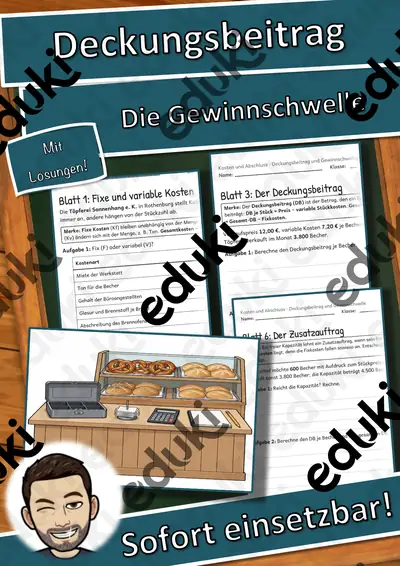
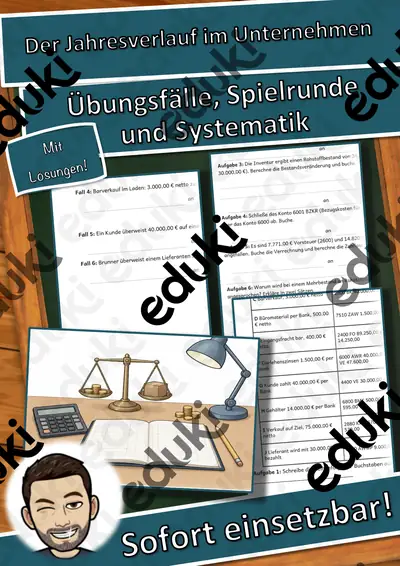
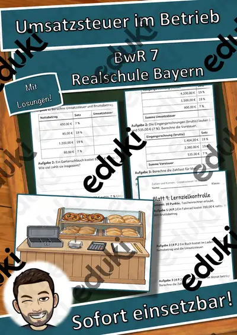
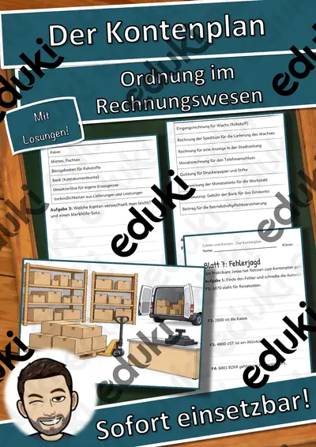

Deckungsbeitrag: Entscheidungen im Unternehmen – Arbeitsheft mit Lösungen (BwR 10, Realschule)
Die Lernenden wenden die Deckungsbeitragsrechnung auf typische Entscheidungen des Lampenwerks Zeller e. K. an: Produktprogramm (Streichung, Preisuntergrenze, Engpass), Verkaufsförderung mit kritischer Menge sowie Eigenfertigung oder Fremdbezug. Das Material setzt den Deckungsbeitrag als bekannt voraus. Alle Namen, Betriebe und Beträge sind erfunden.
Für das Fach Betriebswirtschaftslehre/Rechnungswesen (BwR), Jahrgangsstufe 10, an der Realschule in Bayern.
Enthalten (15 Seiten): Lehrerinfo mit Einsatzhinweisen · 9 Arbeitsblätter, u. a. Das Produktprogramm im Überblick; Soll die Wandlampe gestrichen werden?; Preisverfall und kurzfristige; Engpass in der Fertigung; Verkaufsförderung – lohnt sich die Aktion?; Eigenfertigung oder Fremdbezug (1); Eigenfertigung oder Fremdbezug (2) – · Lernzielkontrolle · Lösungen zu allen Blättern.
Einsatz: Übung und Vertiefung im Unterricht, als Hausaufgabe, zur Wiederholung oder in Vertretungsstunden. Zum Ausdrucken und Kopieren.
Texte KI-gestützt und vom Autor geprüft.
Ähnliche Materialien

Deckungsbeitrag: die Gewinnschwelle – Arbeitsheft mit Lösungen (BwR 10, Realschule Bayern)

Der Jahresverlauf im Unternehmen – Arbeitsheft mit Lösungen (BwR 8, Realschule Bayern)

Umsatzsteuer im Betrieb – Arbeitsheft mit Lösungen (BwR 7, Realschule Bayern)

Rechtsform und Firmenname: Grundlagen für Unternehmen – Arbeitsheft mit Lösungen (BwR 7, Realschule)

Produktionsfaktoren: Standortwahl und Entscheidung – Arbeitsheft mit Lösungen (BwR 7, Realschule)

Der Weg zur Unternehmensgründung – Arbeitsheft mit Lösungen (BwR 7, Realschule Bayern)

Der Kontenplan: Ordnung im Rechnungswesen – Arbeitsheft mit Lösungen (BwR 8, Realschule Bayern)